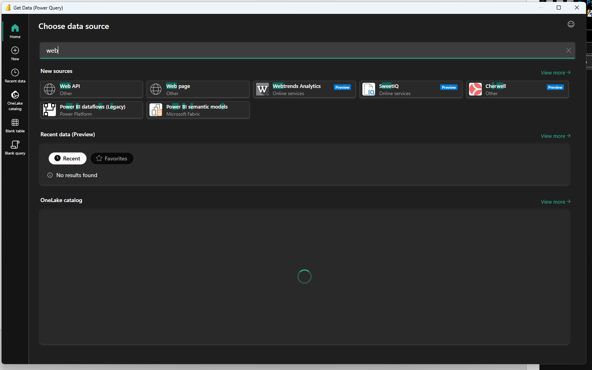
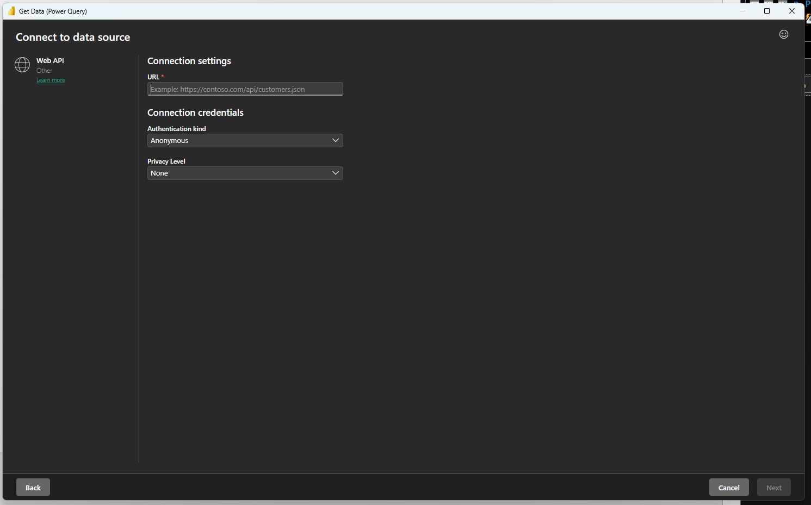
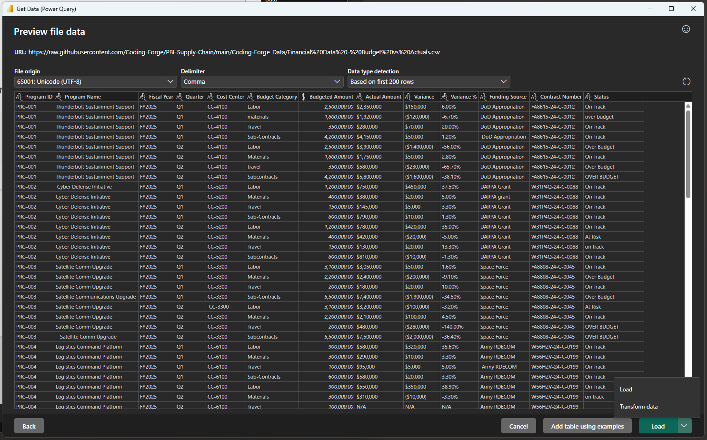
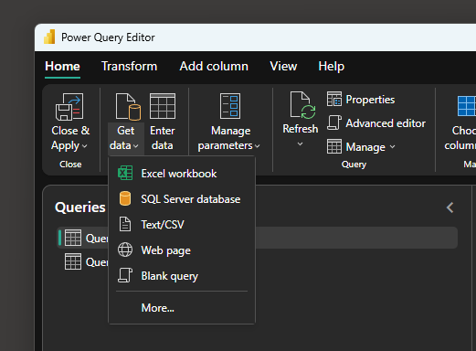
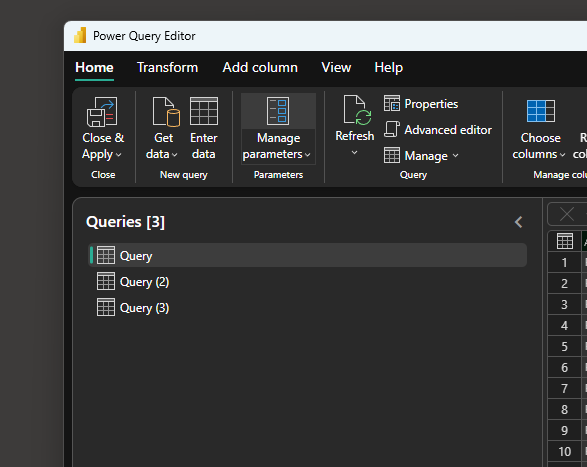

Why the raw URL matters
for people
CSV bytes
repeatable refresh
The GitHub tree URL returns an HTML page. Power BI needs the raw.githubusercontent.com URL, which returns only the CSV content.
Source files
https://raw.githubusercontent.com/Coding-Forge/PBI-Supply-Chain/main/Coding-Forge_Data/Financial%20Data%20-%20Budget%20vs%20Actuals.csvhttps://raw.githubusercontent.com/Coding-Forge/PBI-Supply-Chain/main/Coding-Forge_Data/Financial%20Data%20-%20Programs.csvhttps://raw.githubusercontent.com/Coding-Forge/PBI-Supply-Chain/main/Coding-Forge_Data/Financial%20Data%20-%20Purchase%20Orders.csvConnect the first file
- Open a blank report.
In Power BI Desktop, select Home → Get data. Search for web, select Web API, and choose Connect.
- Paste the Budget vs Actuals raw URL.
Paste the first raw URL above into the URL field.
- Configure public access.
Set Authentication kind to Anonymous. For this public training repository, leave Privacy Level at None, then choose Next.
- Open Power Query.
Confirm the preview contains 13 columns. Open the arrow beside Load and select Transform data.
- Rename the query.
In Query Settings, change the name to Budget vs Actuals. Remove an automatic Changed Type step if it created errors; types are handled in Lab 2.
Import walkthrough





Add the other two files
- Open the complete connector list.
In Power Query Editor, select Home → Get data → More…. Search for web, select Web API, and paste the Programs.csv URL.
- Repeat for Purchase Orders.
Open Get data → More… again, select Web API, and paste the third raw URL. The source has 17 columns and 21 rows, including one intentional duplicate.
- Rename all three queries.
In the Queries pane, double-click each default name and use Budget vs Actuals, Program, and Purchase Orders. Program should show 4 columns and 5 data rows.
- Save the report.
Use File → Save and name it Coding-Forge-Supply-Chain-Lab.pbix. Stay in Power Query for Lab 2.
Profile before cleaning
On the View tab, enable Column quality, Column distribution, and Column profile. Set profiling to Based on entire data set.
Find at least one example of each:
- Currency stored as text and negative values in parentheses.
N/A,NULL, or-standing in for missing values.- Mixed capitalization and extra spaces.
- Mixed date formats.
- A duplicate purchase order and footer rows in Budget vs Actuals.